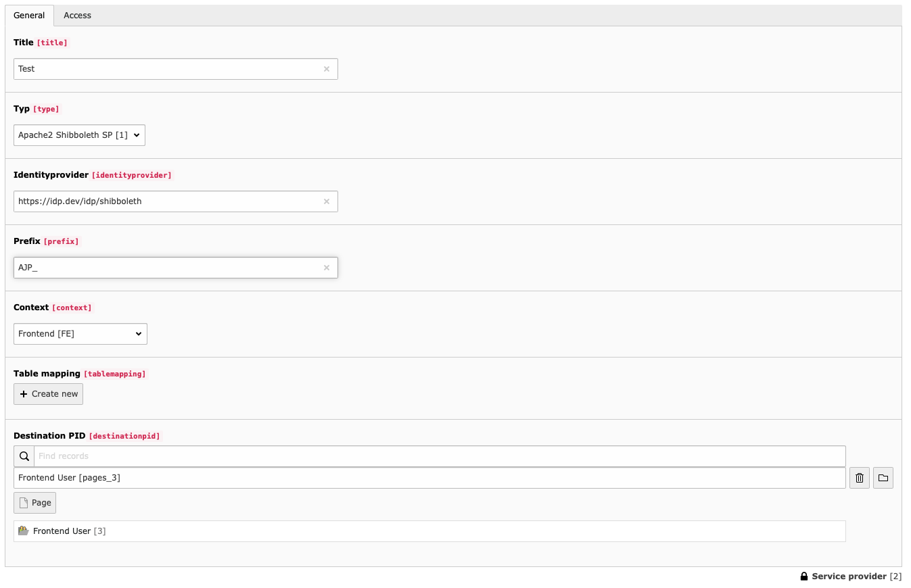

Configuration¶
Service Provider¶
If you want to add a new configuration to use a service provider, it is possible to add this as new record in the list view. The serviceprovider is located under SAML Authentcation.
There are several fields. After you filled in the first data and saved it for the first time, maybe there comes some additional fields. For example if you choose the Apache2 Shibbolet SP the field Prefix will show up.
- Title
In this field you can enter a title for the Configuration.
- Type
Currently there is only the Apache version available. So there is only the possibility to communicate with the Service Provider on your system over environment variables.
- Identityprovider
Here you have to fill in the correct value title of your Identityprovider. (For the Apache2 ServiceProvider the fieldname is ‘Shib-Identity-Provider’)
- Context
This select field let you choose wether the Service Provider should only work for frontend, backend or booth.
- Table Mapping
Here you have to add the mappings from the Service Provider Data to the TYPO3 Tables.
- Destination PID
This is the page where the users should be stored.
- Prefix
If you prefix your variables, this prefix can be added here.
- Access
With this field you can regulate wether this entry should be active or not.
Table mapping¶
You are able to insert data in every table which is accessable by TYPO3.

- Table Name
Here you have to choose the table in which you want to insert.
- Field mapping
Now you can add for every field a mapping rule.
- Access
With this field you can regulate wether this entry should be active or not.
Field mapping¶
With this you can map the values from the Service Provider to the fields of the table.
Warning
There exists an error when you safe the first time. These error is not a problem but I wasn’t able to remove it. You can read more here: Bugs and feature requests.

- Field
The field name in the table. Before you haven’t safed it there will no fields will be shown.
- Foreign field
The field name in the collection of foreign fields.
- Identifier
The checkbox value should only used once and represent the field which should used as identifier. (I hadn’t tried it multi times.)
- Default
If this checkbox is checked then a input field will appear where you are able to fill in any default Value
- Access
With this field you can regulate wether this entry should be active or not.
Tip
If you want to save new users in the database you have to add at least one group to the user. Because if a user doesn’t have a group he will not be able to login.